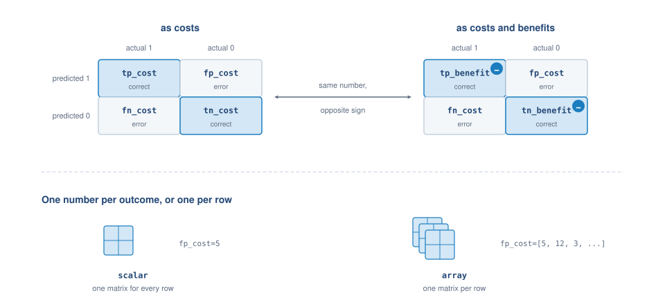
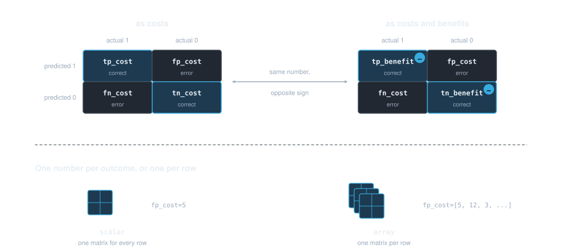

1.1. The cost matrix#
Value-driven and cost-sensitive learning both start from the same object: a table saying what each
of the four classification outcomes is worth. Empulse calls it a
CostMatrix, and everything else in the package consumes one — metrics
score with it, models train on it, samplers resample by it, and the bundled datasets ship one.
This page covers the formalism and the builder API. Worked cost matrices works through complete examples; Handing costs to an estimator covers handing the result to an estimator.
1.1.1. The four outcomes#
The cost matrix is a square matrix whose rows are the predicted class and whose columns are the true class. Each entry is the cost of that pair.
Actual positive \(y_i = 1\) |
Actual negative \(y_i = 0\) |
|
Predicted positive \(\hat{y}_i = 1\) |
\(C(1|1)\) |
\(C(1|0)\) |
Predicted negative \(\hat{y}_i = 0\) |
\(C(0|1)\) |
\(C(0|0)\) |
Empulse names these tp_cost, fp_cost, fn_cost and tn_cost. So to say that a false
positive is five times worse than a false negative:
tp_cost = 0
fp_cost = 5
fn_cost = 1
tn_cost = 0

The two spellings hold the same four numbers; only the diagonal changes sign. A scalar applies one matrix to every row, an array gives every row its own.#

The two spellings hold the same four numbers; only the diagonal changes sign. A scalar applies one matrix to every row, an array gives every row its own.#
1.1.1.1. Costs and benefits are the same number#
Correct classifications usually earn rather than cost, so the value-driven literature writes the same table as a cost-benefit matrix, negating the diagonal:
Actual positive \(y_i = 1\) |
Actual negative \(y_i = 0\) |
|
Predicted positive \(\hat{y}_i = 1\) |
\(b_0 = -C(1|1)\) |
\(c_0 = C(1|0)\) |
Predicted negative \(\hat{y}_i = 0\) |
\(c_1 = C(0|1)\) |
\(b_1 = -C(0|0)\) |
Empulse supports both spellings. add_tp_benefit(x) and add_tp_cost(-x) are the same
statement, and so are the other three pairs. Internally only one form is stored, which is why the
read-back properties mirror each other:
from empulse.metrics import CostMatrix
matrix = CostMatrix().add_tp_benefit(50).add_fp_cost(5)
print(matrix.tp_benefit) # 50
print(matrix.tp_cost) # -50
print(matrix.fp_cost) # 5
print(matrix.fp_benefit) # -5
Pick whichever spelling makes the business statement read naturally and stay with it. Mixing them inside one matrix is legal but invites sign errors, and a sign error here is silent — see Checking your matrix.
1.1.1.2. Class-dependent and instance-dependent costs#
So far every cost has been a single number that applies to every row. In practice the cost of a mistake often differs per instance: misclassifying a high-value churner costs more than misclassifying a low-value one.
Empulse makes no distinction at build time. A term becomes instance-dependent simply by supplying an array instead of a scalar when the metric is called or the model is fitted:
import numpy as np
from empulse.metrics import Cost, Metric
matrix = CostMatrix().add_fn_cost('clv').add_fp_cost('contact_cost')
expected_cost = Metric(matrix, Cost())
y_true = np.array([0, 1, 0, 1])
y_score = np.array([0.2, 0.8, 0.6, 0.4])
# class-dependent: one lifetime value for everyone
print(expected_cost(y_true, y_score, clv=100.0, contact_cost=1.0))
# instance-dependent: one lifetime value per customer
clv = np.array([10.0, 200.0, 30.0, 400.0])
print(expected_cost(y_true, y_score, clv=clv, contact_cost=1.0))
Scalars broadcast; arrays must have one value per sample. A length mismatch raises a ValueError
naming the offending parameter.
Note
Not every strategy honours instance-dependent costs.
MaxProfit reduces array parameters to their mean, because it is a
population-level measure defined over the ROC curve. Choosing a strategy has the full table.
1.1.2. Building a cost matrix#
CostMatrix is a builder: every method returns the matrix, so calls chain.
Terms passed to the same add_* method accumulate, which lets you write one clause of the
business logic at a time.
spam_matrix = (
CostMatrix()
.add_fp_cost('missed_email')
.add_fn_cost('wasted_time')
.set_default(missed_email=5, wasted_time=1)
)
Terms can be plain strings, as above — they are parsed with sympy.sympify, so 'd + f'
and 'gamma * (clv - d)' work too. For anything beyond a couple of terms it is clearer to
declare the symbols first with sympy.symbols and build expressions from them:
import sympy
clv, d, f, gamma = sympy.symbols('clv d f gamma')
churn_matrix = (
CostMatrix()
.add_tp_benefit(gamma * (clv - d - f)) # churner accepts the offer
.add_tp_benefit((1 - gamma) * -f) # churner declines, contact cost is sunk
.add_fp_cost(d + f) # loyal customer takes the offer anyway
)
fn_cost and tn_benefit are left at their default of 0 here: the company takes no action,
so it incurs no campaign cost.
1.1.2.1. Naming parameters#
Raw symbols like d and f make for unreadable call sites. alias gives them business
names, either as a mapping or one at a time:
churn_matrix = churn_matrix.alias({
'incentive_cost': 'd',
'contact_cost': 'f',
'accept_rate': 'gamma',
})
Either the symbol name or its alias can be used when calling the metric — but not both at once,
which raises a ValueError rather than silently letting one win.
1.1.2.2. Default values#
set_default fixes parameters that rarely change, so they can be omitted at call time:
churn_matrix = churn_matrix.set_default(
incentive_cost=10, contact_cost=1, accept_rate=0.3
)
Warning
Register aliases before setting defaults. set_default keys are resolved against the
aliases known at that moment, so a default keyed by an alias that has not been registered yet
cannot be matched. Empulse raises a ValueError naming the unmatched key when the metric is
built.
1.1.2.3. Reserved names#
A handful of names are used internally by Metric and its strategies and
cannot appear as a symbol or alias:
y, s, F_0, F_1, pi_0, pi_1, N, i, n_samples
Using one raises a ValueError when the metric is built.
1.1.3. Uncertain parameters#
A business parameter is often an estimate rather than a fact. The acceptance rate of a retention
offer is not known in advance; it has a distribution. Any term may therefore be a
sympy.stats random variable instead of a symbol:
import sympy.stats
alpha, beta = sympy.symbols('alpha beta')
gamma_rv = sympy.stats.Beta('gamma', alpha, beta)
stochastic_matrix = (
CostMatrix()
.add_tp_benefit(gamma_rv * (clv - d - f))
.add_tp_benefit((1 - gamma_rv) * -f)
.add_fp_cost(d + f)
.alias({'incentive_cost': 'd', 'contact_cost': 'f'})
.set_default(incentive_cost=10, contact_cost=1, alpha=6, beta=14)
)
Note what changed and what did not: the distribution’s parameters (alpha, beta) become
call-time parameters, while gamma itself no longer is.
How the uncertainty is handled depends on the strategy you pair the matrix with.
MaxProfit integrates over the distribution — that is what turns a maximum
profit measure into an expected maximum profit measure. Cost and
Savings substitute the distribution’s mean. See Choosing a strategy.
Multiple random variables are assumed independent.
1.1.4. Marking costs as noisy#
If an instance-dependent cost is itself an estimate — a modelled lifetime value rather than a
measured one — it may contain outliers that distort training.
RobustCSClassifier corrects for this, and mark_outlier_sensitive tells
it which symbols to correct:
robust_matrix = (
CostMatrix()
.add_fn_cost('clv')
.add_fp_cost('contact_cost')
.mark_outlier_sensitive('clv')
.set_default(contact_cost=1)
)
The mark is inert everywhere else; only RobustCSClassifier reads it. See
Custom Metric with mark_outlier_sensitive for what it does with it.
1.1.5. Checking your matrix#
A wrong cost matrix produces a plausible-looking number, and no test will catch it. Before trusting one, read the four terms back:
Two checks are worth making every time:
Signs. A benefit should be positive for an outcome you want. If
tp_benefitcomes out negative at realistic parameter values, a cost and a benefit have been swapped.Magnitudes. Substitute plausible numbers and compare the two error terms. If
fn_costis not meaningfully larger thanfp_costin a churn problem, the matrix is not encoding the asymmetry that motivated the exercise.
In a notebook, both CostMatrix and Metric render
as a LaTeX table when they are the last expression in a cell, which is the fastest way to eyeball
the whole matrix at once.
1.1.6. Constraining parameter values#
Some parameters only mean something over part of the number line. An accept rate is a probability,
so it belongs in [0, 1]; a Beta distribution’s shape has to be positive or the distribution does
not exist. Passing a value outside that range does not produce an error on its own – it produces a
number, computed from an expression that no longer models anything.
The prebuilt metrics already declare the domains they need, so this is handled for you:
from empulse.metrics import mpc_score
y_true = [0, 1, 0, 1, 1, 0]
y_score = [0.1, 0.9, 0.2, 0.8, 0.7, 0.3]
try:
mpc_score(y_true, y_score, accept_rate=2)
except ValueError as error:
print(error)
Distribution parameters need no declaration at all. sympy.stats knows what its own
distributions require, and the metric asks it:
from empulse.metrics import empc_score
y_true = [0, 1, 0, 1, 1, 0]
y_score = [0.1, 0.9, 0.2, 0.8, 0.7, 0.3]
try:
empc_score(y_true, y_score, alpha=-1)
except ValueError as error:
print(error)
For a matrix of your own, declare the domain with
constrain. Bounds are inclusive:
import sympy as sp
from empulse.metrics import CostMatrix, MaxProfit, Metric
clv, d, f, gamma = sp.symbols('clv d f gamma')
cost_matrix = (
CostMatrix()
.add_tp_benefit(gamma * (clv - d - f))
.add_tp_benefit((1 - gamma) * -f)
.add_fp_cost(d + f)
.alias({'accept_rate': 'gamma', 'incentive_cost': 'd', 'contact_cost': 'f'})
.constrain('accept_rate', 0, 1)
)
metric = Metric(cost_matrix, MaxProfit())
try:
metric(y_true, y_score, accept_rate=1.5, clv=200, incentive_cost=10, contact_cost=1)
except ValueError as error:
print(error)
Call alias before
constrain, for the same reason as
set_default: the constraint is stored against the symbol the
alias resolves to. The error message still names whichever spelling you passed.
Conditions that span several parameters are expressed with a callable. This is how you would add the rule that the incentive must be worth less than the customer:
import sympy as sp
from empulse.metrics import CostMatrix, MaxProfit, Metric
clv, d, f, gamma = sp.symbols('clv d f gamma')
cost_matrix = (
CostMatrix()
.add_tp_benefit(gamma * (clv - d - f))
.add_fp_cost(d + f)
.alias({'accept_rate': 'gamma', 'incentive_cost': 'd', 'contact_cost': 'f'})
.constrain(
lambda params: params['clv'] > params['d'],
message='clv must exceed the incentive cost',
)
)
metric = Metric(cost_matrix, MaxProfit())
try:
metric(y_true, y_score, accept_rate=0.3, clv=5, incentive_cost=10, contact_cost=1)
except ValueError as error:
print(error)
A callable receives the parameters keyed by symbol name, with aliases resolved and defaults
filled in – hence params['d'] rather than params['incentive_cost'] above.
Constraints are checked where your values first reach the metric – when you call it, and once at
the start of fit when a model trains on it. Training re-enters the metric many times over, per
boosting round or per candidate tree, and those paths skip the check, so declaring a constraint
costs nothing during training.
1.1.7. Where next#
Handing costs to an estimator — handing the matrix to an estimator.
Choosing a strategy — turning it into a number.
Worked cost matrices — complete worked matrices, including mixtures.
Datasets — the cost matrices that ship with the bundled datasets.